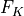
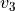

Example 5.2.1
This notebook demonstrates the results of subsection 5.2.1 of [1]. Here, we will compute the  invariant of the homology sphere
invariant of the homology sphere  by leveraging its relation as a +1-surgery on the right handed trefoil.
by leveraging its relation as a +1-surgery on the right handed trefoil.
After computing the  invariant, the two variable invariant of Gukov and Manolescu, associated to the right handed trefoil, we will apply the surgery formula to obtain the invariant and the defect invariants.
Finally, we will compare the results with the expressions deving from the plumbing description, which we calculate using pyPlumbing.
invariant
We start by computing the invariant for the trefoil. This is done using equation 3.44 of [1].
[34]:
def eps_k(s,t,k):
"""
Epsilon parameter. See text below equation 3.43 for details.
"""
res = 0
for eps in range(2):
res += (-1)**eps *( int( (k+s*t+(-1)**eps*s+t) % (2*s*t) == 0) + int( (k-s*t-(-1)**eps*s-t) % (2*s*t) == 0) )
return res
def Fk_torus(s,t,x_order):
"""
Fk invariant for a torus knot. Se equation 3.44 for details. In this function s, t define the torus knot
x_order is the order of the Fk expansion in the variable x.
"""
res = 0
x,q = var("x,q")
k_max = 2*x_order
for k in range(1,k_max+1):
exp = ((k**2 - (s*t - s - t)**2)/(4*s*t))
res += eps_k(s,t,k) * q**exp * (x**(k/2) - x**(-k/2))
return -res*q**((s-1)*(t-1)/2)
Fk = Fk_torus(2,3,10)
Fk
[34]:
((x^(19/2) - 1/x^(19/2))*q^15 + (x^(17/2) - 1/x^(17/2))*q^12 - (x^(13/2) - 1/x^(13/2))*q^7 - (x^(11/2) - 1/x^(11/2))*q^5 + (x^(7/2) - 1/x^(7/2))*q^2 + (x^(5/2) - 1/x^(5/2))*q - sqrt(x) + 1/sqrt(x))*q
We recover the invariant by applying the surgery formula. To that end, we define L_transoform, which applies to a Sage expression the transformation of equation 2.8.
[1]:
load("3d_modularity_revisited.sage")
def L_transform(expr,p,r,b):
"""
Perform the Legendre transformation for the surgery formula on an F_K of equation 2.8 of [1].
"""
Lt = 0
for pref,u in expr.coefficients(x):
if QQ(b/2 - r*u) % p == 0:
Lt += pref*q^(-u^2*r/p)
return Lt.expand()
With this, we can compute the with and without defects as in equation 5.5
[95]:
print("b=0: ", format_expansion(L_transform((x**(1/2)-x**(-1/2))*Fk, -1,1,0)))
print("b=1: ", format_expansion(L_transform((x**(1)-x**(-1))*Fk, -1,1,1)))
print("b=2: ",format_expansion(L_transform((x**(3/2)-x**(-3/2))*Fk, -1,1,2)))
b=0: 2*q*(1 + (-1)*q + (-1)*q^5 + 1*q^10 + (-1)*q^11 + 1*q^18 + Order(q^20))
b=1: 2*q^(5/4)*(1 + (-1)*q^2 + (-1)*q^3 + (-1)*q^8 + 1*q^13 + Order(q^20))
b=2: 2*q^2*(1 + (-1)*q + (-1)*q^3 + (-1)*q^5 + 1*q^16 + Order(q^20))
Defect invariants from plumbings
We compare the  -series produced above with the invariants we obtain from the plumbing formula, which we compute with pyPlumbing.
-series produced above with the invariants we obtain from the plumbing formula, which we compute with pyPlumbing.
[3]:
from pyPlumbing import Plumbing
import numpy as np
P = Plumbing.from_Brieskorn([2,3,7])
P.display()
PyPlumbing provides functionality to compute the invariant. With trivial boundary conditions and Wilson line insersions in the heighest weight representations (0), (1), (2) on the node  we obtain:
[4]:
group_rank = ["A",1]
b = P.trivial_spin_c(group_rank)
print("b = %s" % b.T)
for w in range(3):
W = [vector([0])]*3 + [vector([w])]
print("w = %s" % W)
zh = P.zhat(group_rank, b, 20, wilson=W)
print("zh = %s" % zh)
b = [ 1 -1 -1 -1]
w = [(0), (0), (0), (0)]
zh = q^(1/2)(1 - 1q^(1) - 1q^(5) + 1q^(10) - 1q^(11) + 1q^(18) + 1q^(30) - 1q^(41) + O(q^42))
w = [(0), (0), (0), (1)]
zh = q^(3/4)(1 - 1q^(2) - 1q^(3) - 1q^(8) + 1q^(13) + 1q^(22) + 1q^(25) + O(q^26))
w = [(0), (0), (0), (2)]
zh = q^(3/2)(1 - 1q^(1) - 1q^(3) - 1q^(5) + 1q^(16) + 1q^(20) + 1q^(26) + 1q^(31) - 1q^(53) - 1q^(60) + O(q^70))
Conclusion
Comparing the results, we can see that we have covered the whole Weil representation with defect invariants. Therefore we have demonstrated Theorem 1 of [1] using knot surgeries and the defect surgery formula.